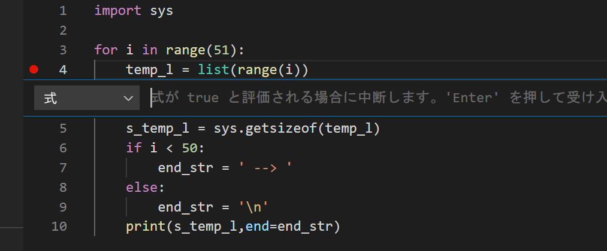

第5回 データ型と制御構文
- 第5回 データ型と制御構文
リストのしくみ
今回の講義では、Pythonのデータ型の代表格であるリストをじっくりと研究してみましょう。リストを研究することで、Pythonのデータ構造の特徴がより一層深く理解できるようになります。また、リストを研究していく過程で、ループ処理や条件分岐といった制御構文について学んでいきましょう。
まず、次のように長さ5のリストを作成してxに代入すると何が起きるか考えてみましょう。
x = [120,-3,'Py','thon','foo']筆者の環境で上記を実行すると、Pythonは、リストオブジェクトを保存するための96バイトのメモリ領域を確保して、それにxという名前をつけます。この96バイトのメモリ領域がリストオブジェクトの正体です(具体的なバイト数は処理系やPythonのバージョンにより異なります)。
オブジェクトが占有するメモリ領域のサイズは、sysモジュールのgetsizeof関数によって調べることができます。ここでモジュールについて簡単に説明しておきます。モジュールというのは、通常Pythonの関数や特殊な変数を定義したファイルです。たとえば、module_nameという名前のモジュールで定義されたfunction_nameという関数を用いる場合は、次のように記述します。
# %%
import module_name # モジュール読み込み
module_name.function_name() # 関数呼び出しあるいは、関数function_nameだけを読み込みたい場合は、次のようなfrom ... import文を用いることができます。
# %%
from module_name import function_name
function_name()このようにして読み込んだ場合、モジュール名module_name.を頭に付けることなく関数function_nameを呼び出すことができるようになりますが、モジュールmodule_name内のそれ以外の関数は呼び出せません。モジュールについては、後の講義で詳しく取り上げます。
さてsysモジュールは、ビルトインモジュールという特殊なモジュールであり、ファイルとしては存在しておらず、Pythonインタープリタに埋め込まれ(built-in)ています。sysの関数群を用いると、Pythonの非常に基本的な機能にアクセスすることができます。ここでは、getsizeofという、引数に与えたオブジェクトの占有メモリサイズをバイト単位で返してくれる関数を使いましょう。
>>> import sys
>>> sys.getsizeof([120,-3,'Py','thon','foo'])
9696バイトのうち56バイトには、参照カウンタやら何やらが保存されており、からっぽのリストにすら存在する領域で、オーバーヘッドと呼ばれることもあります。オーバーヘッドの具体的なサイズはPythonのバージョンや環境によって若干異なりますので、各自調べてみましょう(getsizeofの注釈参照)。
オーバーヘッドの容量は空のリストのサイズを調べることにより確かめられます。
>>> sys.getsizeof([])
56メモリの効率的利用について研究しているのでないかぎり、オーバーヘッドの機能を意識することはあまり重要ではありません。重要なのは残り40バイトの配列と呼ばれる部分です。

この合計40バイトの配列はメモリ上で一続きになっており、各8バイトの5つの区画に分かれています。それぞれの区画には、リストの要素になっているオブジェクトのアドレスが格納されています。(第1回の講義で学んだように、64ビット処理系ではメモリアドレスを8バイト数値で表すことに注意しましょう。リストのメモリ利用に関する注釈参照。)
たとえば第1要素である120という整数オブジェクトは、メモリ上の9604番地に存在します（実際にはアドレスはもっと大きな整数ですが、面倒なので下4桁だけ使っています）が、それに対応して、リストオブジェクトの配列の第1番目の区画には、オブジェクト120のアドレスである9604が書き込んであります。他の要素についても同じで、配列の第k番目の区画には、リストの第k番目の要素であるオブジェクトのアドレスが格納されています。
このように、リストオブジェクトは、その要素そのものを直に格納しているのではなく、要素オブジェクトのアドレスを格納しています。このおかげで、リストオブジェクトには、整数、小数、文字列などの様々なデータ型のPythonオブジェクトを好きな順番で詰め込めるようになっています。なぜなら、どんなオブジェクトでも、アドレスは8バイトの数値だからです。
リストが要素オブジェクトそのものを含んでいないことは、getsizeofを使っても間接的に確かめることができます。
>>> x = [1,2,3]
>>> y = [1,2,[3,4,5,6]]
>>> z = [1,2,[3,4,5,6,7,8,9,10]]
>>> sys.getsizeof(x)
80
>>> sys.getsizeof(y)
80
>>> sys.getsizeof(z)
80上のコードでは、x、y、zが含んでいる要素の数はすべて異なるように見えますが、実際にはどのリストもオブジェクト三つ分の参照しかもっていないので、占有するメモリの大きさは同じになっています。もしリストが要素オブジェクトそのものを含んでいるとしたら、メモリの占有サイズは
x < y < zとなることが期待されますが、そうはなっていません。
なお、上記の性質は、リストだけでなく、より広いコンテナというクラスのデータ型の多くに当てはまる性質です。これから論じることは、多くが他のコンテナ型のデータ型に当てはまります。コンテナ型については教科書のセクション6に詳しいので、良く読んでおいてください。
たとえば
>>> x = [120,-3,'Py','thon','foo']
>>> x[1]
-3
>>> のように入力するときPythonは、xというリストオブジェクトの中にある配列領域のインデックス1の要素に書いてあるアドレスをチェックして、次にそのアドレスに行ってどんなオブジェクトがあるのかチェックします。するとそこには-3という整数オブジェクトがあったので、それを出力してくれています。
リスト要素の修正
では次に、リストの要素の書き換えについて考えてみます。たとえば第2インデックス要素を’Py’から’bar’に書き換えたいとします。この場合、次のように書きます。
x[2] = 'bar'するとPythonは何をするかというと、’bar’という文字列オブジェクトをメモリ上に作成して、そのアドレス0800をリストxの配列の第2インデックス要素に上書きで格納します。これによって、オブジェクト’Py’はリストxからは忘れ去られ、代わりに'bar'がリストのメンバーとして参入します。

ここで重要なのは、もともと'Py'が存在していた5782番地の内容が書き換えられるわけではないということです。そうではなく、単にリストxが覚えているアドレスが付け替えられるだけです。
このように、x[2]という表記は、第3要素オブジェクトへの参照として機能します。言い変えると、x[2]='bar'という代入は、ハコ型代入ではなくラベル型代入になっているということです。Pythonリストは、要素オブジェクトへの参照を格納していると考えることができ、通常Pythonのコミュニティーはそのような表現を好んで使います。
再帰的リスト
Pythonリストが格納しているのは要素オブジェクトそのものではなく要素オブジェクトへの参照であることから、リストは自分自身を要素にもつという奇妙なことができてしまいます。次のようにしてみましょう。
>>> x = [1,2,3]
>>> x[2] = x
>>> x
[1, 2, [...]]ここでは、リストxを作成したあと、その第3要素に自分自身を代入しています。これにより、xの内部にある配列の最後の要素には、x自身の参照が格納されることになります。最後の[...]という表現は、仮に自分自身をここに表示すると無限に入れ子になったリストを表示することになってしまうので、それを避けるために導入された略記表現です。
こうした自分自身への参照を要素にもつ再帰的リストを積極的に作るべき場面はすこし思いつきませんが、似たような状況はPythonプログラミングにおいて容易に生じ得ます。それは、複数のリストオブジェクトが互いに相手への参照を要素にもつ以下のような場合です。
>>> x = [1,2,3]
>>> y = [4,5,6]
>>> x[2] = y
>>> x
[1, 2, [4, 5, 6]]
>>> y[2] = x
>>> x
[1, 2, [4, 5, [...]]]
>>> y
[4, 5, [1, 2, [...]]]詳しくは解説しませんが、このような循環参照はガベージコレクションというメモリ管理において重要なトピックとなります。興味がある人はインターネット等で調べてみてください。
リストのコピー
PythonにはRのCopy on modifyがないため、リストの複製を作るためには、明示的にプログラマが複製操作を行う必要があります。
Pythonでは、それぞれのデータ型は、それを操作するための専用の一連の関数をもっています。このような関数群を、そのデータ型のメソッドと呼びます。(メソッドについては、後の講義で詳しく解説します。)
たとえば、リスト型がどのようなメソッドを持つかを調べたいときは、REPLにおいてlist.と入力してタブキーを叩くと一覧が表示されます(もし1回で駄目なら2回叩いてください)。
>>> list.
list.append( list.copy( list.extend( list.insert( list.pop( list.reverse(
list.clear( list.count( list.index( list.mro( list.remove( list.sort(もしくはVS Code上でlist.と入力してしばらく待つと、メソッド一覧が表示されます(ただし少なくともpyreadlineモジュールがインストールされている必要がありますし、もしかしたらインテリセンスという拡張機能も必要かもしれません)。
上記のリストのメソッド一覧の中に、copyという自身の複製を作成するメソッドが有ります。これを呼び出すには、次のようにします。
>>> x = [1,2,3]
>>> y = x.copy() # xの複製を作ってyに代入
>>> x
[1, 2, 3]
>>> y
[1, 2, 3]
>>> x is y # xとyは異なるオブジェクト
False
>>> id(x)
2510581312768
>>> id(y)
2510581325056確かに、xのコピーが作成され、yに代入されています。xとyは異なるアドレスを指しており、異なるオブジェクトを参照していることが分かります。
注意しなくてはならないのは、copyメソッドを呼び出すと、実際にコピーされるのは、要素オブジェクトへの参照であって、要素オブジェクト自体はコピーされないということです。参照がコピーされるということは、アドレスがコピーされるということです。xとyは、それ自体はメモリの違う場所にありながら、全く同じ要素オブジェクトを参照していることになります。
>>> x = [1,2,3]
>>> y = x.copy()
>>> x is y
False
>>> x[0] is y[0] # 第1要素を共有
True
>>> x[1] is y[1] # 第2要素を共有
True
>>> x[2] is y[2] # 第3要素を共有
Trueこうした性質をもったコピーをpythonではシャローコピー(shallow copy)と呼びます。シャローコピーは、要素がイミュータブルな場合には全く問題になりません。シャローコピーが問題になるのは、リストがミュータブルな要素を持つときです。
たとえば次の例を考えてみましょう。ここでは、zというリストを作成したうえで、リストxの第2要素にzへの参照を持たせています。さらにxのコピーを作ってyに代入すると、xとyは異なるオブジェクトとなりましたが、当然第2要素のzを共有したままです。従って、x[2]の要素を変更すると、yにまで影響が及びます。
>>> z = [1,2,3]
>>> x = [120,-3,z,'thon','foo']
>>> y = x.copy()
>>> x
[120, -3, [1, 2, 3], 'thon', 'foo']
>>> y
[120, -3, [1, 2, 3], 'thon', 'foo']
>>> x is y # xとyは異なるオブジェクト
False
>>> x[2] is y[2] # だがzオブジェクトを共有
True
>>> x[2][1] = 5 # x経由でzに修正を加える
>>> x
[120, -3, [1, 5, 3], 'thon', 'foo']
>>> y # yも変わってしまった
[120, -3, [1, 5, 3], 'thon', 'foo']これは図に書くと何が起きているのか分かりやすいでしょう。

要素の参照をウォッチする
上の例が示すように、リストの各要素がメモリのどこを参照しているのかを逐一把握するのは大変です。
そこで、ここでは、リストの各要素のアドレス(id関数の出力)の下位2バイトを出力する関数を定義しておきます。
def sid(obj):
return hex(id(obj)&0xffff)
def lid(obj):
if type(obj) is list:
return [sid(el) for el in obj]
else:
return sid(obj)sidは、オブジェクトのアドレスの下位2バイトを返します。一方lidは、リストが引数に与えられたとき、要素の参照を要素として持つリストを返します。リスト以外を引数に与えたときはsidの戻り値を返します。
練習1(シャローコピーその1)
上記のコードを実行する際にリアルタイムで何が起きているのかをデバッグモードで確かめることにします。GitHub/varsディレクトリの下に適当なファイル(たとえば”shallow.py”)を作成し、上のsid、lidのコードをコピー＆ペーストした上で、その下に次のコードを記述しなさい。
z = [1,2,3]
x = [120,-3,z,'thon','foo']
y = x.copy()
x[2][1] = 5 # x経由でzに修正を加える
pass次の8式をウォッチ式に設定しなさい。
sid(x)sid(y)x is ylid(x)lid(y)x[2] is y[2]lid(x[2])lid(y[2])
デバッグを実行し、ステップインによってウォッチ式と各変数の値がどのように変化するか観察しなさい。
練習2(シャローコピーその2)
次の2つのコードについて、xの変更(ともに3行目)はyに影響を及ぼすか?結果を予想してからデバッグモードで確かめなさい。
# コード1
x = [1,[4,5,6],3]
y = x.copy()
x[1] = [7,8,9]
pass# コード2
x = [1,[4,5,6],3]
y = x.copy()
x[1][:] = [7,8,9]
passただし、以下のウォッチ式を設定すること。
sid(x)sid(y)x is ylid(x)lid(y)x[1] is y[1]lid(x[1])lid(y[1])
ディープコピー
このようにシャローコピーは、意図せぬ挙動を引き起こす可能性がありますので、それを避けたい場合はディープコピーという操作を行います。ディープコピーをすると、参照だけでなく要素オブジェクトも再帰的にコピーされます。ディープコピーは、copyモジュールによって提供されるdeepcopy関数で行うことができます。
>>> import copy
>>> x = [1,[4,5,6],3]
>>> y = copy.deepcopy(x)
>>> x is y
False
>>> x[1] is y[1]
Falseただし、次のコードで分かるように、何もかもコピーされてしまうわけではありません。“末端”のイミュータブルオブジェクトなど、オリジナルと複製で共有しても問題が起きないような場合は、複製を行いません。
>>> x = [1000,[4000,5000,6000],3000]
>>> y = copy.deepcopy(x)
>>> x is y
False
>>> x[1] is y[1]
False
>>> x[0] is y[0]
True
>>> x[1][0] is y[1][0]
True従って、特に入れ子の構造がないオブジェクトでは、シャローコピーとディープコピーの動作は全く同じです。
練習3(ディープコピー)
次のコードをデバッグモードで実行し、単なる代入、シャローコピー、ディープコピーの違いを観察しなさい。
import copy
x = [1,2,[3,4,[5,6]]]
y = x
y = x.copy()
y = copy.deepcopy(x)
passただしウォッチ式は以下とすること。
sid(x)sid(y)x is ylid(x)lid(y)x[2] is y[2]lid(x[2])lid(y[2])x[2][2] is y[2][2]lid(x[2][2])lid(y[2][2])
スライス記法
シャローコピーはスライス記法によっても行うことができます。
>>> x = [1,2,3]
>>> y = x[:]
>>> x is y
Falseこのように、スライス記法は通常はシャローコピーとなりますが、代入の左辺で使うときは意味合いが異なりますので注意が必要です。前回の講義でも論じたように、左辺で使うと、コピーを作るのではなく、オリジナルのリストオブジェクトを変更することになります。
>>> x = [1,2,3]
>>> y = x
>>> x is y
True
>>> x[:] = [4,5,6]
>>> x
[4, 5, 6]
>>> y
[4, 5, 6]
>>> x is y
Trueこのように、代入の左辺で使うスライス記法とそれ以外のスライスは分けて考えた方が良いでしょう。なお、これはスライス記法だけでなく、x[0]と言ったような、単一要素のインデクシングでも同じことが言えます。
ちなみに、スライス記法は、リストの1部分のシャローコピーを作るのにも使えます。下では、xの第1インデックス～第3インデックス要素のコピーをyに代入しています。
>>> x = [1000,2000,3000,4000,5000]
>>> y = x[1:4] # スライスによるコピー
>>> x is y
False
>>> x[1] is y[0]
True
>>> x[2] is y[1]
True
>>> x[3] is y[2]
Trueここで、x[1:4]という表現は、xの第1インデックス要素から第3インデックス要素までを取り出す表現ですが、これはなれないと分かりにくいかと思います。まず基本的な事項として、リストのインデックスは0からはじまることに注意しましょう。たとえば上の場合ですと、インデックスと要素オブジェクトの対応は次のようになります。
| インデックス | 0 | 1 | 2 | 3 | 4 |
|---|---|---|---|---|---|
| 要素オブジェクト | 1000 | 2000 | 3000 | 4000 | 5000 |
x[1:4] |
始点 | –> | 終点 | ||
x[0:3] |
始点 | –> | 終点 | ||
x[:2] |
始点 | 終点 | |||
x[2:] |
始点 | –> | 終点 |
x[i:j]という表現では、インデックスiからj-1の位置までスライスすることになります。上の表には幾つかの例を挙げておきました。リストの先頭要素が始点の場合、始点を指定するインデックス0は省略できます。同様に、リストの末尾要素が終点の場合、終点を指定するインデックス(この場合5)は省略することができます。
さて部分的なスライスを代入の左辺で使うと、やはりオブジェクト本体の変更になります。なお、左辺のスライスの長さと右辺のリストの長さは違っても構いません。
>>> x = [1,2,3,4,5]
>>> x[1:4] = ['foo','bar']
>>> x
[1, 'foo', 'bar', 5]
>>> x = [1,2,3,4,5]
>>> y = x
>>> x is y
True
>>> x[1:5] = ['foo','bar']
>>> x
[1, 'foo', 'bar']
>>> y
[1, 'foo', 'bar']
>>> x is y
Trueリストの変形と演算
リストは様々なメソッドを搭載しており、要素の編集を行うことができます。たとえばappendメソッドは、リストの末尾に要素を追加します。
>>> x = [1,2,3]
>>> x.append(4)
>>> x
[1, 2, 3, 4]ここでは、xの末尾に4という値を付け足しています。
その逆に、popメソッドはリストから要素を取り出すことができます。
>>> x = [1,2,3,4,5]
>>> y = x.pop() # 末尾から取り出す
>>> x
[1, 2, 3, 4]
>>> y
5
>>> y = x.pop(1) # インデックス1から取り出す
>>> x
[1, 3, 4]
>>> y
2そのほか、+演算子を用いて複数のリストを結合することが可能です。
>>> x = [1,2,3]
>>> y = x + [4,5,6]
>>> y
[1, 2, 3, 4, 5, 6]
>>> x
[1, 2, 3]ただし、この場合はappendメソッドと違って、もとのオブジェクトx自体は変更されていないことに注意してください。
リストを*演算子で掛け算することもできます。
>>> x = [1]*10
>>> x
[1, 1, 1, 1, 1, 1, 1, 1, 1, 1]ただし、*演算子は対象リストをシャローコピーして繋げるだけであることに注意しなくてはなりません(教科書のp.212参照)。つまり、次のようなことが起きます。
>>> x = [[1,2]]*5
>>> x
[[1, 2], [1, 2], [1, 2], [1, 2], [1, 2]]
>>> x[0][1] = 5 # 第1の要素だけ変更したつもり
>>> x # だが全ての要素が変わってしまった
[[1, 5], [1, 5], [1, 5], [1, 5], [1, 5]]リストについてはこれ以上の説明は省略しますが、教科書のセクション6.1に様々な操作が載っていますので、よく読んでおいてください。
ループ処理
それではここで、リストオブジェクトが占有するメモリのサイズが、要素の数とともにどのように増加していくか調べてみましょう。理論的予測に基づけば、1つの要素オブジェクトあたり、オブジェクトの参照を格納するのに8バイト使います。従って、要素の数をnとすれば、リストの占有メモリサイズは(オーバーヘッド容量)+8nとなるはずです。
この実験を行うために、繰り返しのための制御構文であるforループを使ってみましょう。皆さんはRのforループをすでにご存じだと思います。次のような構文でしたね。
# 1:10はベクトルc(1,2,3,4,5,6,7,8,9,10)と同じ意味
for (i in 1:10) {
print(i) #forブロック
}
print('End')上記のコードは、1から10までの整数を画面に出力したあと、最後に’End’と出力するRコードです。中括弧の中身はforブロックと呼ばれ、ここに記述された内容が繰り返されます。iはループカウンタと呼ばれる変数で、ループが1回実行されるごとに1ずつ増加していきます。iの初期値と最終的な値はinの後に記述されたベクトル1:10が決定します。この場合は、初期値がi=1、最後のループではi=10となります。
Pythonのforループもよく似ているので、Rのforを知っている皆さんならば即座に理解できます。
# ループはi=0からi=3まで繰り返して欲しい
index_range = [0,1,2,3]
for i in index_range:
print(i) #
print('FOO') # ここは
print('BAR') # 全部
print('BAZ') # forブロック
print('') #
print('End')上記のPythonコードは0から3までの整数を画面に印字します(ついでに’FOO’、‘BAR’、’BAZ’も印字します)。
Rとの違いをまとめると、次のようになります。
forブロックが中括弧ではなくインデント(字下げ)によって表現される。- 先頭行の行末にコロン(
:)が必要。 forのあとの丸カッコは必要ない。
なかでも重要なのは1です。print(i)やprint('FOO')のまえにタブキー1つ分の字下げが入っていることに注意してください。これによって、print(i)やprint('FOO')はforブロックの中の要素であるとPythonインタープリタによって解釈されます。一方、print('End')は字下げしていないので、ブロックの外にあると見なされ、繰り返されることはありません。
それでは上記のコードをVS Codeのインターラクティブモードで実行してみてください。
0
FOO
BAR
BAZ
1
FOO
BAR
BAZ
2
FOO
BAR
BAZ
3
FOO
BAR
BAZ
End練習4(ループ処理その1)
上記のコードの最初の行をブレークポイントに設定して、デバッグモードで起動してください。ステップインを繰り返し、どのようにiの値が変化していくか、どういう順番でコードが実行されていくかをよく観察してください。
forループについては、教科書のセクション4.2.3に詳しく解説されていますので、良く読んでおいてください。
rangeオブジェクト
PythonにはRのように1:10といった連続整数値のベクトルを表す簡便な表記がありません。Pythonでは代わりに、もっと性能の良いrangeオブジェクトという特殊なオブジェクトを用います。
rangeオブジェクトは、リストではありませんが、forループにおいて連続する数値のリストと同じ働きをするオブジェクトです(こういったオブジェクトをイテラブルと言います)。rangeオブジェクトを用いると、先のコードは次のようになります。
# %%
# range(4)は[0,1,2,3]と同じように機能する
for i in range(4): # rangeオブジェクトを使った
print(i)
print('FOO')
print('BAR')
print('BAZ')
print('')
print('End')上のコードにおいて、rangeはrangeオブジェクトを生成する関数であり、range(4)は0から3までの連続する整数のリストと全く同じように機能します。一般に、0からnまでの連続する整数を表したいときはrange(n+1)と書きます。
rangeオブジェクトから、リストを作成することも可能です。そのためには、次のように関数listを使います。
>>> x = list(range(4))
>>> x
[0, 1, 2, 3]range関数については、教科書のセクション4.2.4に詳しく解説されていますので、良く読んでおいてください。
練習5(ループ処理その2)
次のように、0から9までの全ての整数について、2乗した値を出力するプログラムrange関数を使って書きなさい。
# 結果
0
1
4
9
16
25
36
49
64
81リストの占有メモリサイズ
それでは、forループを使ってリストのサイズと占有メモリサイズの関係を調べましょう。以下のプログラムはリストのサイズを0(空っぽ)から50まで変化させたときに、リストの占有メモリサイズがどのように変化するかを調べるためのものです。
# リストのサイズが0から50まで変化するとき
# メモリの占有サイズはどう変化するか?
import sys
for i in range(51):
temp_l = list(range(i)) # リストを作成
s_temp_l = sys.getsizeof(temp_l) # サイズ計算
print(s_temp_l,end=' --> ') # 結果の出力forブロックの中を1行ずつ見ていきましょう。
まず1行目ですが、
temp_l = list(range(i))これは、0で始まりi-1で終わるリスト[0,1,2,3,...,i-1]を作成してtemp_lという変数に代入しています。iはループインデックスですので、k回目のループでは、長さkのリストが作成されることに注意しましょう。よってforブロックが1回実行されるごとに、作成されるリストの長さは要素1個ぶん長くなります。
ちなみに、最初のループではi=0です。したがって最初のループでは
temp_l = list(range(0))を実行していることになりますが、これは空のリストを作成することに注意してください。
2行目は、
s_temp_l = sys.getsizeof(temp_l)ですが、これは先ほど作成したtemp_lのサイズを計算してs_temp_lという変数に代入しています。最後に、
print(s_temp_l,end=' --> ')ですが、これは上記で計算したメモリサイズs_temp_lを出力しています。print関数は、デフォルトで改行するようになっていますが、オプション引数endによって改行以外の文字を出力することができます。ここでは、サイズを出力したあとに、’ –> ’という文字列を出力しています。
それでは、VS Codeで上記のコードを実行してみましょう。
56 --> 64 --> 72 --> 80 --> 88 --> 96 --> 104 --> 112 --> 120 --> 128 --> 136 --> 144 --> 152 --> 160 --> 168 --> 176 --> 184 --> 192 --> 200 --> 208 --> 216 --> 224 --> 232 --> 240 --> 248 --> 256 --> 264 --> 272 --> 280 --> 288 --> 296 --> 304 --> 312 --> 320 --> 328 --> 336 --> 344 --> 352 --> 360 --> 368 --> 376 --> 384 --> 392 --> 400 --> 408 --> 416 --> 424 --> 432 --> 440 --> 448 --> 456 --> たしかに、オーバーヘッド容量からはじまって、リストの長さが1増加するごとにメモリサイズが8バイト増加していることが分かります。
条件分岐
ところで、上記の”実験”プログラムは、出力が’–>’記号で終わっていて美しくありません。この最後の矢印を消す方法を考えてみましょう。
forブロックの最後の文で、print関数を用いていますが、そのオプション引数endを、forブロックが最後に実行される時以外は’ –> ’に設定し、最後の実行のときだけは改行に設定すれば良さそうです。
これを言葉で書くと次のようになるでしょう。
もし i < 50 ならば、end_str = ' --> '
さもなくば、end_str = 改行文字ただしend_strはprint関数のend引数に与える文字列です。
ところで、Rでの条件分岐を覚えているでしょうか?代表的な条件分岐の構文であるif-else文を思い出してみましょう。
if (i < 50) {
end_str <- ' --> ' # ifブロック
} else {
end_str <- '\n' # elseブロック
}上記のコードで、’’は様々なプログラミング言語で改行文字を表す記号です。このようなバックスラッシュを使ってあらわされる特殊文字をエスケープシーケンスと呼びます。エスケープシーケンスについては、教科書のセクション2.2.7に詳しく説明されているので、良く読んでおいてください。
さて、ifの後の中括弧に挟まれたコード領域はifブロックと呼ばれ、丸カッコの中の条件がTRUEの場合のみ実行されます。一方elseの後の中括弧に挟まれたコード領域はelseブロックと呼ばれ、条件がFALSEの場合のみ実行されます。従って、上記Rコードは、
もし i < 50 ならば、end_str = ' --> '
さもなくば、end_str = '\n'となり、意図した通りのコードになっています。
全く同じことをPythonで書くと、次のようになります。
if i < 50:
end_str = ' --> ' # ifブロック
else:
end_str = '\n' # elseブロックRでのif-elseと比べると、次の違いがあります。
ifブロック、elseブロックが字下げによって表現されるif行とelse行はコロン(:)で終わる- 条件節を囲む丸カッコは必要ない
ここでもやはり1が最も重要です。条件分岐でも、やはりコードブロックは字下げによって表現されます。
なおRと同様に、else:節は必須ではありません。else:節を省略すると、条件が不成立の場合には何もしません。したがって、たとえば次のように書いても、結果は同じになります。
# 先にend_strを' --> 'に設定し、
# 最後のループだけend_str = '\n'に再設定する
end_str = ' --> '
if i == 50:
end_str = '\n' # ifブロックそれでは条件分岐を用いて、メモリサイズ計算プログラムを改良しましょう。
import sys
for i in range(51):
temp_l = list(range(i))
s_temp_l = sys.getsizeof(temp_l)
if i < 50:
end_str = ' --> '
else:
end_str = '\n'
print(s_temp_l,end=end_str)なお、実際にはもっとパフォーマンスの良い書き方はありますが、ここでは条件分岐の説明のために上記のコーディングを採用しました。
ブレークポイントの編集
ここでは、上記のfor文の中でif-else構文がどのように機能しているのかを見るため、やや高度なブレークポイントを設定してみます。
forブロックの1行目にブレークポイントを設定してください。ブレークポイントの赤いマークを右クリックし、『ブレークポイントの編集』を選びます。

『式：式がtrueと評価される場合に中断します。』と表示されるので、i==48と入力してEnterしましょう。

これで、iが48に等しいときにのみストップするブレークポイントになります。(『式』ではなく『ヒットカウント』を選んで49を入力しても効果は同じです。)
ウォッチ式には、i < 50を設定しましょう。
これでデバッグを実行すると、forループの49回目でストップしますので、そこからステップインを繰り返し、ウォッチ式i < 50の値に応じて、ifブロックとelseブロックのどちらが実行されるか観察してください。
より望ましいコーディング
ところで、上記のコードでは、50や51といった具体的な値がコードのなかに埋め込まれています。これでは、値を変更したくなったときに一々50と51の両方を修正しなくてはなりません。また、もっとプログラムが大きくなると、どこの値を修正すれば良いのか分からなくなりそうです。従って、具体的な数値をソースコードの途中に色々と書き込むのは良くなさそうです。
具体的な値は、次のように、ソースコードの最初のほうで変数に置き換えてしまうのが望ましいです。ついでに、以下の改良を付け加えてみましょう。
- 結果が見やすいように5つごとに改行
- オーバーヘッド分を差し引く
import sys
max_size = 50 # max_sizeは最大のリスト長
overhead = sys.getsizeof([]) # オーバーヘッド計算
for i in range(max_size+1):
temp_l = list(range(i))
s_temp_l = sys.getsizeof(temp_l)
if i < max_size:
end_str = ' --> '
else:
end_str = '\n'
print(s_temp_l-overhead,end=end_str) # オーバーヘッド除去
if i%5 == 4: # 5つごとに改行
print()これを実行すると以下のようになります。ずいぶんと結果が分かりやすくなりました。
0 --> 8 --> 16 --> 24 --> 32 -->
40 --> 48 --> 56 --> 64 --> 72 -->
80 --> 88 --> 96 --> 104 --> 112 -->
120 --> 128 --> 136 --> 144 --> 152 -->
160 --> 168 --> 176 --> 184 --> 192 -->
200 --> 208 --> 216 --> 224 --> 232 -->
240 --> 248 --> 256 --> 264 --> 272 -->
280 --> 288 --> 296 --> 304 --> 312 -->
320 --> 328 --> 336 --> 344 --> 352 -->
360 --> 368 --> 376 --> 384 --> 392 -->
400字下げの注意
Pythonでは、字下げによってコードブロックを表現するという、他の言語にはない際だった特徴があります。このおかげで、Pythonは非常に見やすいコードを書くことが可能になっています。ただ、インデントの幅を間違えるだけで、全く異なる意味になることがあるので注意が必要です。
たとえば次のような三つのコードを考えてみましょう。
for i in range(10):
if i%2 == 0:
print(i)
print("Hello, World!") # ブロックの外for i in range(10):
if i%2 == 0:
print(i)
print("Hello, World!") # forブロックの中for i in range(10):
if i%2 == 0:
print(i)
print("Hello, World!") # ifブロックの中これらのコードは、3行目のインデントが異なるだけでそれ以外は全く同じですが、全て全く異なる挙動をします。3行目の所属するブロックが異なるからです。やっかいなのは、どれもエラーがでないことです。
このように、forやifブロックがあると、コーディング中にうっかりタブキーを一つ挿入すると、エラーが出ない上にコードを破壊してしまう可能性があるので、ブロックの字下げには十分に注意しなくてはなりません。特にブロックが入れ子になっている場合はこういった失敗に気づきにくいので注意しましょう。
その他の制御構文
whileループ
forループは予め繰り返し回数が決まっている場合に便利ですが、繰り返し回数が予め決められない場合もあり、その場合にはwhileループを用います。whileループは指定した条件が成り立っているかぎりwhileブロック内のコードを繰り返し実行しますが、条件が不成立になるとループ処理を終了します。
forループとの違いを明らかにするため、まず0から5までの整数を印字するプログラムをforループで書いてみましょう。
for i in range(6):
print(i)同じものをwhileループを使って書くと、次のようになります。
i = 0 # ループカウンタの初期値を0に設定
while i <= 5:
print(i) # iの値を印字
i += 1 # iの値を1増やす字下げした部分がwhileブロックであり、繰り返される部分です。whileブロック内の最後の行はiの値を1増やすコードであり、i=i+1の省略記法です(教科書のp85-86参照)。上記のコードでは、まずiの値を0に設定し、ループ内ではiの値を印字してから、iの値を一つ増やすことを繰り返しています。したがってiの値はwhileブロックが実行されるたびに1ずつ増えます。whileの後に指定した条件i<=5は、ループ処理が継続されるための条件であり、これが成り立っている限りwhileブロックの処理が繰り返されます。よって、上記のコードでは、iは0,1,2,3,…と増加し、iが6になるとwhileブロックは実行されず、ループは終了します。forループとは違い、whileループではループカウンタの初期値や増加をプログラマがコーディングしなくてはならないことに注意してください。
次に、10000より小さい3の累乗(3,9,27,…)を全て印字するプログラムをwhileループで書いてみましょう。作戦として、iの初期値に3を設定し、iを印字してからiに3を掛けるということを繰り返し、iが10000以上になったとき繰り返しをやめれば良さそうです。これを実装すると次のようになります。
i = 3 # iの初期値を3に設定
while i < 10000:
print(i) # iを印字
i *= 3 # iに3をかけるi *= 3は、i = i * 3の略記法です(教科書p85)。このプログラムは、条件i < 10000が成り立っている間のみ、iを印字してからiを3倍する操作を繰り返します。このようなプログラムは、10000未満の3の累乗がいくつあるか予めわからないかぎり、forループで書くのが難しいことに注意してください。
二重ループ
少し複雑な処理になると、ループの中にループを作る必要が出てきます。これを二重ループと呼びます。ループはいくらでも入れ子にでき、三重ループ、四重ループなどと呼ばれます。良くあるパターンはforループの中にforループがあるタイプですが、whileループの中にforループを作ったり、forループの中にwhileループを作ったりなど、whileとforの組み合わせに制約はありません。
複雑なコードを書くさい、いきなり二重ループや三重ループのコードを書かないようにしてください。これはデバッグが難しくなりがちだからです。そうではなく、まずは一番内側のループから作成し、それが正しく動作することを確認することから始めてください。内側のループが完成したら、外側にループを付け足して二重ループを作りましょう。この二重ループもうまく動作することが確認できたら、必要に応じて更にループを付け足し、三重、四重と入れ子の階層を深めていくようにしてください。
上述のように内側から外側に向かってコーディングするとうまく行くことが多いですが、問題によっては、外側のループから内側に向かって作成したほうが作りやすい場合もあります。重要なのは、全体を一気にコーディングするのではなく、シンプルなコードから始めて、動作をテストしながら、徐々に入れ子の階層を深めていくべきだということです。
一例として、1000より小さい素数を全て印字するプログラムを作ってみましょう。こういう場合、問題が複雑ですので、まずは与えられた一つの数字iが素数かどうか判定するプログラムを作ってみることから初めるべきです。次のコードは、491が素数かどうか調べるプログラムです。素数ならTrueを印字し、素数でないならFalseを印字します。
i = 491 # iを491に設定
j = 2
while i % j != 0:
j += 1
# iが素数ならTrue, さもなくばFalseを印字
if i == j:
print(True)
else:
print(False)このコードでは1行目でiに491を代入し、2-4行目において、iを割り切る最小の素因数を求めています。そのような素因数を求めるため、まずjの値を2に設定し、whileループ内でjの値を1ずつ増やしながらiがjで割り切れるかその都度調べています。
whileのあとの条件文で使われている!=は、「左辺と右辺の値が異なる」ことを表す二項演算子です。従って、このwhileループは、iがjで割り切れるまで繰り返されることになり、ループが終了した時点でjにはiの最小の素因数が代入された状態になります。
最後に、最小の素因数jがもとの数iに等しければiは素数ですので、この性質を利用して、素数ならばTrue、素数以外ならばFalseを印字しています。
次に、二重ループを作る準備として、上記のコードを、iが素数かどうかに応じてTrueかFalseかを印字するのではなく、素数ならばiを印字し、さもなくば何も印字しないコードに書き換えておきます。
i = 491 # iを491に設定
j = 2
while i % j != 0:
j += 1
if i == j:
print(i) # Trueならiを印字これで内側のループが完成しました。次に、iを2から1000まで1ずつ増やしながら全てのiについて上記の操作をするプログラムを作りましょう。そのためには、次のように、上記のコードの2行目以降をまるごと、forループの中に入れて二重ループを作ります。
for i in range(2,1000):
j = 2
while i % j != 0:
j += 1
if i == j:
print(i) # Trueならiを印字上記コードの外側のforループでは、iを2から999まで1ずつ増やしながら2行目以降の処理を行っています。range(2,1000)は、2以上1000未満の整数列を与えるrangeオブジェクトであることに注意してください(教科書p129)。2行目以降は、先のプログラムと全く同じで、iが素数ならiを印字し、さもなくば何も印字しません。これで目的が達成できました。
break文
breakはループ処理を中断してループの外に出るための命令を表します。通常ループの中で条件分岐と組みあせわて使います。特に、forループの中でbreakを使うと、繰り返し回数の上限は決まっているが、途中でループを終了する場合もあるようなプログラムを作ることができます。
たとえば、breakを使うと、素数を求めるプログラムの内側のループをforで実装できます。
for i in range(2,1000):
for j in range(2,i+1): # jを2からiまで増やす
if i % j == 0:
break
if j == i:
print(i)上記のコードでは、iがjで割り切れた時点で内側のforループの処理を終了します。内側のループでrangeオブジェクトの範囲が2からiまでになっていることに注意してください。break文でループを終了すると、ループカウンタの値はbreakが実行された時点での値のままになります。従って、内側のループが終了した時点で、jにはiの最小の素因数が代入された状態になります。
breakはwhileと組み合わせることも良くあります。特に、whileの条件をTrueに設定した次のようなループは永遠に条件が成立する(==True)ため、無限にwhileブロックが実行され、終了することがありません。このようなループを無限ループと呼びます。
while True:
# ここに書かれた処理は
# 無限に繰り返されるこういったループには、必ずループブロック内部に特定の条件が満たされた場合にbreakで脱出する処理を設ける必要があります。
breakは、breakを含む一番内側のループのみ終了させることに注意しましょう。入れ子ループを二つ以上ジャンプするような構文はありません。なお、ループ処理を1回分だけスキップするcontinueという命令文もあります。経験上、continueを使う機会は多くありませんので、説明を割愛します(教科書のp136参照)。
for-else文
Pythonにはfor-else構文という、独特の制御構文があります。これは、通常のforブロックに加えてelseブロックを持ちます。elseブロックには、breakが実行されずにforが最後まで処理された場合にのみ、追加で実行されるべき処理を書きます。for-elseはなくても特に困らない構文ですが、これを使うと分かりやすいコードを書ける場合があります。
たとえば、for-else文を使うと、1000未満の素数を求めるプログラムは、次のようにスマートに書けます。
for i in range(2,1000):
for j in range(2,i): # jを2からi-1まで増やす
if i % j == 0:
break # ループを抜ける
else:
print(i) # iを印字ここで、内側のループのrangeオブジェクトの範囲が2からi-1までであることに注意しましょう。else節は、breakが実行されなかったときのみ、すなわち、iより小さいどのjでも割り切れなかったときのみ実行されます。従って、素数のみが印字されることになります。
elif型条件分岐
if-else構文では、ある条件が成り立っているときと、そうでないときの処理を指定できました。一方で、
- AならばXを実行
- Aでないとき、BならばYを実行
- AでもBでないとき、Zを実行
というように、二つ以上の条件を使って処理を分岐させたいときは、elif構文を使います。
では、1000未満の自然数iについて、iを印字するとともに、iが2で割り切れるものは2で割った商を、2で割り切れないが3で割り切れるものは3で割った商を、2でも3でも割り切れない場合はXを合わせて印字するようなプログラムを作りましょう。まずは、if-else文で書いてみます。
for i in range(1,1000):
if i % 2 == 0:
print(i,i//2) # 2で割れるならi//2を印字
else:
if i % 3 == 0:
print(i,i//3) # 3で割れるならi//3を印字
else:
print('X')i//2は整数iを2で割った商です(教科書p81)。このコードでは、１つめのif-else文のelseブロックの中にさらに入れ子でif-else文が入っていることに注意してください。
次のように、elif構文を使うと、これと同じことが、入れ子を使わないで記述できます。
for i in range(1,1000):
if i % 2 == 0:
print(i,i//2) # 2で割れるならi//2を印字
elif i % 3 == 0:
print(i,i//3) # 3で割れるならi//3を印字
else:
print('X')elifはelse:ifと本質的に同じ意味ですが、インデントが変化していることに注意してください。見かけ上、入れ子構造がなくなっています。
このコードでは、6の倍数は、2でも3でも割り切れますが、2で割った商のみが印字されることに注意してください。elif節はif節が成り立たない場合のみ実行されるので、if節とelif節の条件が両方成り立っている場合は、ifブロックのみが実行されます。
elifは幾つでも好きなだけ連結できます。次のコードは、2や3では割り切れないが、5で割り切れる数については5で割った商を印字します。
for i in range(1,1000):
if i % 2 == 0:
print(i,i//2) # 2で割れるならi//2を印字
elif i % 3 == 0:
print(i,i//3) # 3で割れるならi//3を印字
elif i % 5 == 0:
print(i,i//5) # 5で割れるならi//5を印字
else:
print('X')if-else構文でこのようなプログラムを作ると、入れ子が深くなってしまって大変読みにくくなってしまいます。elif構文はこうした問題を解決してくれます。一般にコードを作成するときは、効率性（コードの短さや速さ）だけでなく、読みやすさ（可読性）に注意してコーディングするようにしましょう。
論理演算子
if、elif、while等の条件式を用いる制御構文では、以下のような論理演算子を用いて複数の条件式を組み合わせた条件式や、条件式の否定文を用いることができます。
and
and演算子は日本語の「かつ」に相当し、条件式A and 条件式Bは条件式Aと条件式Bがともに成立(すなわち値がTrue)のときのみTrueになるような条件式を表します。たとえば、次のコードは、100未満の自然数のうち、2と3の公倍数(つまりは6の倍数)のみを印字します。
for i in range(1,100):
if i % 2 == 0 and i % 3 == 0:
print(i)条件式A and Bの値は、条件式A、Bの値に応じて次のように決まります。
| A | B | A and B |
|---|---|---|
| True | True | True |
| True | False | False |
| False | True | False |
| False | False | False |
or
or演算子は日本語の「または」に相当し、条件式A or 条件式Bは条件式Aと条件式Bのうち少なくともどちらか一方がTrueであればTrueになるような条件式を表します。たとえば、次のコードは、100未満の自然数のうち、2の倍数と3の倍数を全て印字します。
for i in range(1,100):
if i % 2 == 0 or i % 3 == 0:
print(i)条件式A or Bの値は、条件式A、Bの値に応じて次のように決まります。
| A | B | A or B |
|---|---|---|
| True | True | True |
| True | False | True |
| False | True | True |
| False | False | False |
not
not演算子は条件式の否定(〜でない)を表し、not 条件式Aは条件式AがFalseのときTrueになる条件式を表します。たとえば次のコードは、100未満の自然数のうち、3で割り切れないものを全て印字します。
i = 1
while not i >= 100:
if not i % 3 == 0:
print(i)
i += 1上のコードは、次のコードと全く同じ意味であることに注意しましょう。
i = 1
while i < 100:
if i % 3 != 0:
print(i)
i += 1このようにnot演算子を使った条件式は、多くの場合notを使わない条件式に書き換えることができます。notを多用すると条件式が読みにくくなるので、使用は最小限に留めたほうが良いでしょう。例えば、以下のようなコードはnotを使わずに書くのが難しい例です。
# ブラックリスト以外を印字するコード
black_list = [12,34,56,78,91]
for i in range(1,100):
if not i in black_list:
print(i)このコードは、100未満の自然数のうち、リストblack_listに含まれていないもののみを印字します。ここでinは、特定の要素がリストに含まれているかどうかをチェックする演算子であり、A in BはAがリストBに含まれていればTrueとなります。したがってnot A in BはAがリストBに含まれていないときのみTrueになります。ちなみに、not A in BはA not in Bと書くこともできます。
教科書のセクション3.4には、論理演算子のより高度な使い方が解説されています。興味のある方はチェックしておきましょう。
練習6(not inを使わない方法)
上記の「ブラックリスト以外を印字するコード」をnotやnot inを使わずに書き直してください。(ヒント:if-else構文とpassを使います。)
まとめ
本講義では、以下のことを学びました。
- リストの構造
- シャローコピー
- ディープコピー
- スライス記法
- リストの演算
- ループ処理
- rangeオブジェクト
- 条件分岐
- 論理演算子
今回の講義では、リストや制御構文のごく基本的な事柄しか扱えませんでした。リストや制御構文には非常に多くの押さえておくべき事柄がありますので、教科書のセクション4とセクション6を良く読んでおきましょう。
参考書
- 『High Performance Python: Practical Performant Programming for Humans』(M. Gorelick, I. Ozsvald著) (2020) O’Reilly. ISBN-13 : 978-1492055020.
- ハイパフォーマンスPython第2版(M. Gorelick, I. Ozsvald著, 中山光樹(訳)) (2023) O’Reilly. ISBN-13: 978-4873119908.
上記参考書はリストや辞書の挙動について詳しいです(2は1の翻訳)。中〜上級者向け。
補遺
sys.getsizeofと__sizeof__
Pythonのビルトインデータ型には、__sizeof__というメソッドが備わっており、getsizeofはこれを呼び出しています。しかし、getsizeofの戻り値は__sizeof__の戻り値と常に同じではなく、前者はデータ型によってはオーバーヘッドにガベージコレクションのためのメモリ領域16バイトを含むことがあります。本稿では、オーバーヘッドの大きさには関心がないので、getsizeofと__sizeof__の違いについては論じません。
参考までに、筆者の環境において幾つかの単純なオブジェクトに対する両者の出力を列挙しておきます。
| オブジェクト | getsizeof | __sizeof__ |
|---|---|---|
0 |
24 | 24 |
"" |
49 | 49 |
[] |
56 | 40 |
() |
40 | 24 |
{} |
64 | 48 |
dict() |
232 | 216 |
set() |
216 | 200 |
リストのメモリ利用に関する注釈
- リストがどのように要素オブジェクトへの参照を格納しているかは、リストオブジェクトを作成するCPythonのソースコードを見ると分かりやすいです。こちらはちょっと細かい話なので別ファイルにします。
- 長いリストにおいて
popメソッドを使うとき、リストの末尾からpopするよりも、先頭からpopするほうが、はるかに遅いことが知られています。なぜそのような速度の差が生じるのか、考察してください。リストはpopによって配列に隙間が出来たときに何をしなければならないか、そしてそれにはどのくらいの時間がかかるか考察してみてください。 rangeオブジェクトは、要素の参照を格納していません。様々な長さのrangeオブジェクトを作成し、占有メモリのサイズを比較してみてください。なぜPython3が等差数列リストではなく、rangeオブジェクトを使用することを選んだのか、考察してみてください。- 講義本編では、リストのサイズを一つずつ増やしながら、リストの占有メモリサイズが要素数に対して線形に増えていくことを確認しました。一方、リストの
appendメソッドによって、既存のリストに一つずつ要素を加えていくときは、占有メモリサイズは線形には増加して行かず、興味深いパターンを示します。どのようなパターンになるのか研究し、なぜそのようになっているのか考察しましょう。